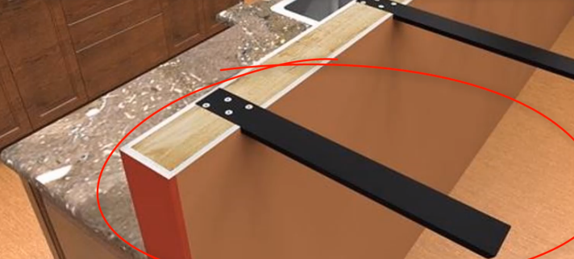
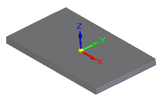
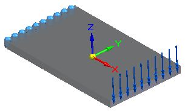
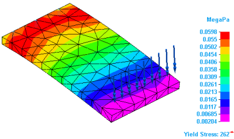
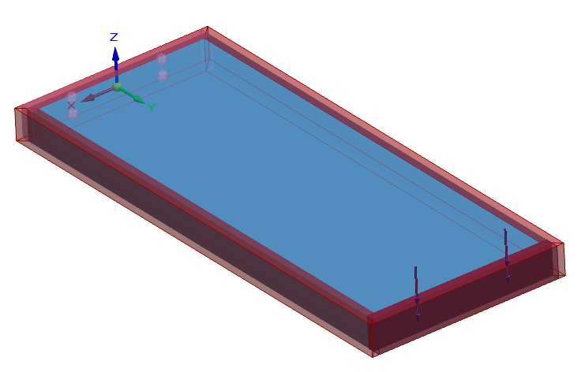
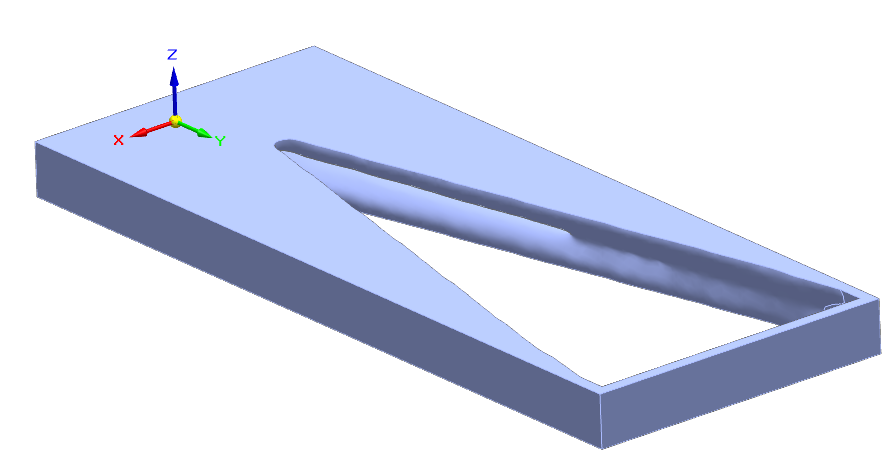
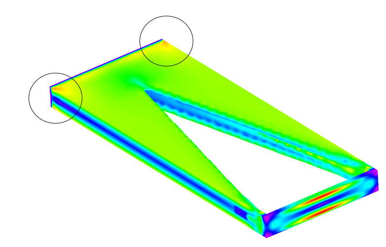

Use simulation results to inform generative studies
You can use the finite element analysis stress results produced by a Solid Edge Simulation study to inform your structural optimization study inputs in Generative Design. You can work with both of these types of studies in the same document to produce an optimal part design.
-
Identify the basic design requirements for a part.
Example:This kitchen requires supports for a granite countertop. What is the optimal material and shape (mass) needed for the support?

-
Create a 3D prototype.
Example:The design body used for this simple support is a metal plate.

-
Test the prototype for areas of highest stress with a Solid Edge Simulation study.
Example:-
An XYY Components force load in the -Z direction was applied to the end face that will not be secured. A fixed constraint was applied to the face at the opposite end of the support, where it is to be fastened to the countertop framing.

-
The stress results show the areas at the fixed end is where more mass is needed to support the countertop.

-
-
Create a generative study to structurally optimize the part using the same force and fixed constraint boundary conditions on the same faces, with the default offset volume. The simulation results showed that you also need to preserve sufficient material on the faces at each end of the support and along the sides to maintain structural integrity. You can add this with the Preserve Region command.
Example:
The resulting, structurally optimized part shows how much mass can be removed from the support based on the material and inputs you specified.

-
You can validate this result using the Show Stress command
 on the Generative Design tab.
on the Generative Design tab.If stress results on the mesh body indicate areas where too much material was removed, you can change the values for existing load, constraint, or offset volumes.
You also can add or remove boundary conditions. In this case, use PathFinder to display the design body again and turn off the display of the mesh body. You need to be able to select original faces.
Example:Consider increasing the offset value of all of the faces in the preserved region. To keep more material only at the location of high stress, you can preserve two separate regions with different values.
